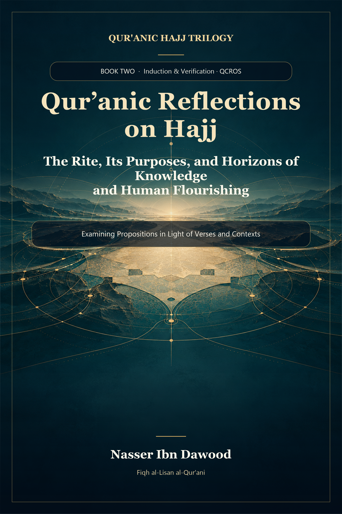

135. Qur’anic Reflections on Hajj

The second book of the Qur’anic Hajj trilogy: contextual inquiry using QCROS, testing hypotheses against verses and distinguishing evidence from interpretive models.
Condensed conceptual adaptation; the Arabic work remains the primary source.
قراءة PDF داخل الموقع / Read the PDF on this website
جارٍ تجهيز القارئ… / Preparing the reader…
Book Summary, Table of Contents & Excerpt
QUR’ANIC REFLECTIONS ON HAJJ
The Rite, Its Purposes, and Horizons of Knowledge and Human Flourishing
A Condensed Conceptual English Adaptation
NASSER IBN DAWOOD
2026 • English companion to the Arabic reader R12
Fiqh al-Lisān al-Qur’ānī | QCROS | Mathani
Creative Commons BY-SA 4.0 for the author’s original work
nasserhabitat.github.io/nasser-books/
An interpretive study. Not a substitute for the original Arabic research or a manual of ritual performance.
I. The Global Knowledge Manifesto
Knowledge is a universal right. The author firmly believes that wisdom should not be locked behind paywalls or language barriers.
Global Access Policy: All books in this library are available for free in multiple digital formats (PDF, HTML, DOCX, TXT).
The Digital Library: As of early 2026, the collection hosts 236 volumes (118 in Arabic and 118 in English), fully optimized for AI-assisted research and digital archiving.
Official Platforms: Main Website: nasserhabitat.github.io/nasser-books/
GitHub: nasserhabitat/nasser-books
This manifesto is reproduced here as supplied by the author for this condensed edition.
II. Translator’s Note: The Bridge of Meaning
This English edition is a condensed conceptual adaptation. It is not a word-for-word translation, but rather an "extraction of essence." It presents the core philosophical framework in accessible English, omitting the exhaustive linguistic debates and classical references found in the original Arabic text.
For the academic researcher: The original Arabic version remains the primary source for comprehensive linguistic analysis, detailed exegesis (Tafsir), and the complete bibliography.
This adaptation also preserves the methodological status of the Arabic edition. A claim marked OPEN remains open; a CANDIDATE remains a candidate; a RESISTED or STRONGLY RESISTED claim is not revived through simplification; and a CLOSED result remains closed only within its declared scope. The aim is clarity without scientific inflation.
Key Qur’anic terms are sometimes retained in transliteration—such as nafs, tawaffī, barzakh, and baʿth—when a single English equivalent would prematurely narrow the field under study.
Editorial application to this volume
In this book, hajj, bayt, tawaf, sha’a’ir, taqwa, Safa and Marwah are retained when a single English rendering would turn an unresolved lexical question into a purported conclusion. Surah references are maintained by name; English descriptions of Qur’anic wording are contextual paraphrases. The Arabic edition’s claim-rank system governs every chapter of this adaptation.
Contents
• Reader’s Orientation
• Part One — A Charter for Open Qur’anic Reflection
• Part Two — Hajj, Purpose, Argument and Capacity
• Part Three — The Major Concepts and Their Resistant Contexts
• Part Four — Benefit, Ethics and Human Flourishing
• Part Five — A Practical Model for Daily Work
• Part Six — Open Theses, Countertests and Current Conclusions
• Conclusion — From Rite to Responsible Knowledge Without Substitution
• Appendix A — Claim-Status Register for This Edition
• Appendix B — Selected Qur’anic Reference Map
• Appendix C — Bilingual Working Glossary
• Appendix D — Sources and Editorial Boundary
Reader's Orientation
A book of inquiry, not a replacement rite
This book asks what may be learned from the Qur'anic discourse on hajj beyond a bare inventory of physical actions, without erasing the concrete rite to which that discourse refers. Its point of departure is a tension that is also a source of intellectual energy. The Qur'an associates the House with pilgrimage, access, times, ritual actions and named locations. It also speaks of remembrance, mindfulness of God, safety, food for those in need, and benefits that pilgrims are to witness. The author asks how these strands belong together and whether their ethical structure may inspire responsible work in education, research and public life.
The answer advanced here has carefully limited layers. At the textual level, hajj is tied to the House and its particular Qur'anic setting. At the level of relationships, its verses connect action with remembrance, piety, protection and benefit. At the level of a contemporary model, a researcher may use the pattern of orientation, evidence, repeated review, open communication and service as a training framework. This third layer is an analogy designed by the author, not a newly discovered ritual or a Qur'anic synonym for publishing research.